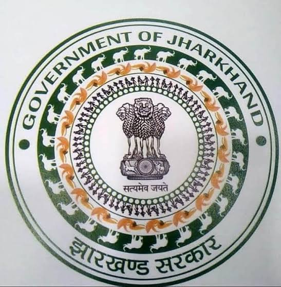

Explore the major components of the KALASARA system through the portal.
KALASARA combines water treatment, membrane separation and digital monitoring into one modular system.
Designed around a deployable, energy-conscious architecture.
Multiple treatment stages work together to improve water quality.
Sensors observe important water-quality parameters during operation.
Designed for challenging locations with limited infrastructure.
Polluted and mining-affected water can contain suspended solids, turbidity, dissolved contaminants and changes in water chemistry.
KALASARA uses a modular treatment architecture where each stage has a defined role.
KALASARA integrates sensors and digital monitoring to observe important parameters during system operation.
Monitoring values shown here are placeholders until validated prototype readings are connected.
The modular architecture can be adapted according to the water-quality challenge and deployment environment.
Treatment architecture intended for water affected by mining-related contamination.
EXPLORE →Compact treatment and monitoring designed around locations with limited infrastructure.
EXPLORE →Digital monitoring provides measurable water-quality information during operation.
EXPLORE →KALASARA is being developed through iterative experimentation involving filtration, membrane materials, bio-treatment, sensor integration and system optimization.
Explore the prototype, technology, purification process and monitoring system.